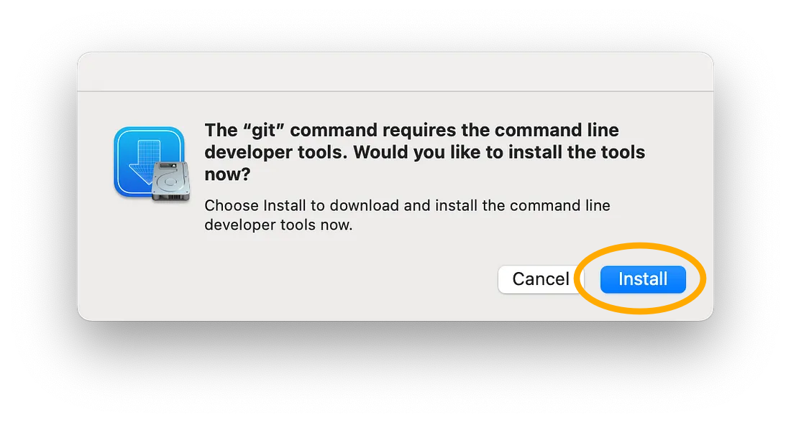
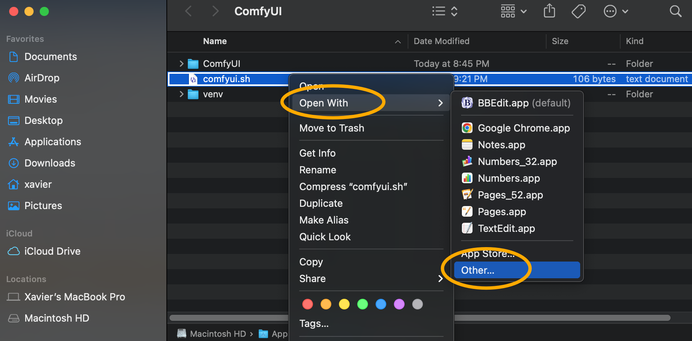

INSTALLING COMFYUI ON APPLE SILICON
To generate AI images with ComfyUI on Apple Silicon you need the following prerequisites:
- Apple Command Line Developer tools (mostly for the git tool).
- A Python 3.11 installation.
- An hardware acclerated PyTorch installation for Apple Silicon.
- A copy of the contents of the ComfyUI GitHub repository.
- A copy of the contents of the ComfyUI-Manager GitHub repository.
- Some extra Python modules required by ComfyUI (installed via the pip package manager).
- Some ComfyUI custom nodes (i.e. community developed ComfyUI plugins).
- 70GB of disk space to install some AI models (also known as checkpoints).
This documentation will guide you through the installation process of all these prerequisites.
Administrator privileges are required to install Python 3.11.
CREATE A DESTINATION DIRECTORY
OPEN A TERMINAL
CMD+Space -> Terminal.app
CREATE AN EMPTY DESTINATION DIRECTORY
mkdir /Applications/ComfyUI
albert@macbook ~ % mkdir /Applications/ComfyUI
albert@macbook ~ %
Plan for enough disk space! ComfyUI (including AI models required for this tutorial) uses about 70GB of disk space.
Your destination directory can be located on an external disk if needed. External disks are accessible via the /Volumes directory.
NAVIGATE TO THE DESTINATION DIRECTORY
cd /Applications/ComfyUI
albert@macbook ~ % cd /Applications/ComfyUI
albert@macbook ComfyUI %
INSTALL APPLE COMMAND LINE DEVELOPER TOOLS
CHECK IF GIT IS INSTALLED
git --version
albert@macbook ComfyUI % git --version
albert@macbook ComfyUI %
If git is not installed already on your computer, you will be asked to install the command line developer tools.
INSTALL DEVELOPER TOOLS
If necessary, click on Install.
|

|
INSTALL COMFYUI
CLONE THE COMFYUI GITHUB REPOSITORY
git clone https://github.com/comfyanonymous/ComfyUI.git
albert@macbook ComfyUI % git clone https://github.com/comfyanonymous/ComfyUI.git
Cloning into 'ComfyUI'...
remote: Enumerating objects: 11530, done.
remote: Counting objects: 100% (116/116), done.
remote: Compressing objects: 100% (82/82), done.
remote: Total 11530 (delta 53), reused 72 (delta 33), pack-reused 11414
Receiving objects: 100% (11530/11530), 5.63 MiB | 4.18 MiB/s, done.
Resolving deltas: 100% (7778/7778), done.
The git clone command downloads all the files from the ComfyUI GitHub repository into the /Applications/ComfyUI/ directory.
CREATE A PYTHON VIRTUAL ENVIRONMENT
CREATE A PYTHON VIRTUAL ENVIRONMENT
python3 -m venv ./venv
albert@macbook ComfyUI % python3 -m venv ./venv
albert@macbook ComfyUI %
Python creates a self-contained Python environment inside the /Applications/ComfyUI/venv directory.
ACTIVATE THE VIRTUAL ENVIRONMENT
source ./venv/bin/activate
albert@macbook ComfyUI % source ./venv/bin/activate
(venv) albert@macbook ComfyUI %
The activate shell script activates our self-contained Python environment.
The (venv) at the start of our command prompt tells us that our virtual environment is active.
UPDATE THE PIP PACKAGE MANAGER
UPDATE THE PIP PACKAGE MANAGER
pip3 install --upgrade pip
(venv) albert@macbook ComfyUI % pip3 install --upgrade pip
Collecting pip
Using cached pip-24.1-py3-none-any.whl (1.8 MB)
Installing collected packages: pip
Attempting uninstall: pip
Found existing installation: pip 20.2.3
Uninstalling pip-20.2.3:
Successfully uninstalled pip-20.2.3
Successfully installed pip-24.1
The pip3 package manager inside our virtual environment is updated to the latest version.
INSTALL PYTORCH
INSTALL PYTORCH NIGHTLY
pip3 install --pre torch torchvision torchaudio --extra-index-url https://download.pytorch.org/whl/nightly/cpu
The pip3 Python package manager installs the PyTorch Python modules inside our virtual environment.
For more information about installing PyTorch with hardware acceleration on Apple Silicon, see this page.
INSTALL PYTHON MODULES
INSTALL PYTHON MODULES FOR COMFYUI
pip3 install -r ./ComfyUI/requirements.txt
The pip3 package manager installs Python modules required by ComfyUI inside our virtual environment.
INSTALL THE 'COMFYUI-MANAGER'
NAVIGATE TO THE COMFYUI CUSTOM NODES DIRECTORY
cd ./ComfyUI/custom_nodes
albert@macbook ComfyUI % cd ./ComfyUI/custom_nodes
albert@macbook custom_nodes %
INSTALL 'COMFYUI-MANAGER'
git clone https://github.com/ltdrdata/ComfyUI-Manager.git
(venv) albert@macbook custom_nodes % git clone https://github.com/ltdrdata/ComfyUI-Manager.git
Cloning into 'ComfyUI-Manager'...
remote: Enumerating objects: 10964, done.
remote: Counting objects: 100% (1206/1206), done.
remote: Compressing objects: 100% (346/346), done.
remote: Total 10964 (delta 913), reused 1048 (delta 859), pack-reused 9758
Receiving objects: 100% (10964/10964), 8.54 MiB | 6.99 MiB/s, done.
Resolving deltas: 100% (7979/7979), done.
The git clone command downloads and installs ComfyUI-Manager from the ComfyUI-Manager GitHub repository.
ComfyUI-Manager is package manager that donwloads and installs custom nodes (plugins) for ComfyUI.
CREATE A STARTUP SCRIPT
NAVIGATE BACK TO YOUR DESTINATION DIRECTORY
cd /Applications/ComfyUI
albert@macbook custom_nodes % cd /Applications/ComfyUI
albert@macbook ComfyUI %
CREATE A COMFYUI STARTUP SCRIPT
nano ./comfyui.sh
albert@macbook ComfyUI % nano ./comfyui.sh
albert@macbook ComfyUI %
The nano Terminal-based text editor opens a new empty text file.
If you don't like nano, you can use any text editor to edit the comfyui.sh file.
EDIT THE STARTUP SCRIPT
Add these lines to the startup script.
#!/bin/zsh
#Activate the Python virtual environment
source /Applications/ComfyUI/venv/bin/activate
#Launch ComfyUI Server
python3 /Applications/ComfyUI/ComfyUI/main.py
CTRL+O to save the file. ENTER to confirm. CTRL+X to exit.
Note that nano requires the use of the CTRL key, not the CMD key.
If you do not have a GPU compatible with ComfyUI, you can launch in (slow!) CPU-only mode by using main.py --cpu at the end of the last line instead.
MAKE THE SCRIPT EXECUTABLE
chmod +x ./comfyui.sh
albert@macbook ComfyUI % chmod +x ./comfyui.sh
albert@macbook ComfyUI %
The chmod command adjusts the permissions of the the comfyui.sh file to make it executable.
OPEN THE CURRENT DIRECTORY IN FINDER
open .
albert@macbook ComfyUI % open .
albert@macbook ComfyUI %
A new Finder window opens at /Applications/ComfyUI.
LAUNCH THE COMFYUI SERVER
'OPEN WITH' APPLICATION
Right-click on comfyui.sh.
Choose Open With -> Other...
|

|
ENABLE 'ALL APPLICATIONS'
Enable -> All Applications
|
|
CHOOSE TERMINAL
Search for Terminal.
Choose Terminal.app from the search results.
|
|
LAUNCH THE SCRIPT
Enable "Always Open With".
Click Open.
|
|
Our comfyui.sh startup script will now always open from the Terminal app when double-clicked.
The ComfyUI server starts in a new Terminal window.
OPEN THE COMFYUI INTERFACE
OPEN A WEB BROWSER
Open your favourite web browser.
NAVIGATE TO THE COMFYUI PAGE
The ComfyUI user interface appears inside the web browser tab.
Make sure the Manager button is visible in the toolbar on the right.
Bookmark this tab for easy access in the future.

To stop the ComfyUI Server, simply close the terminal window and click Terminate at the prompt.
(Don't close it now, we still have some stuff to do!)
To launch the ComfyUI server again in the future, simply double-click on /Applications/ComfyUI/comfyui.sh.
A terminal will open and ComfyUI Server will launch.
FINAL CHECKLIST...
Are you able to launch ComfyUI on your computer?
Yes. The ComfyUI interface is up and running on my computer.